Изучение космоса с использованием EV3
Теоретический блок
Как робототехника связана с изучением космоса
Робототехника играет важную роль в изучении космоса. Роботы могут выполнять задачи там, где человеку находиться сложно или опасно: исследовать поверхность планет, собирать данные, передавать изображения и выполнять технические действия.
При изучении космоса используются разные робототехнические устройства: марсоходы, луноходы, автоматические станции, спутники и исследовательские зонды. Они помогают получать информацию о поверхности планет, температуре, освещённости, препятствиях, рельефе и других условиях.
LEGO MINDSTORMS EV3 можно использовать как учебную модель космического робота. С его помощью обучающиеся могут создать модель ровера, запрограммировать движение, объезд препятствий, остановку перед объектом и выполнение условной миссии.
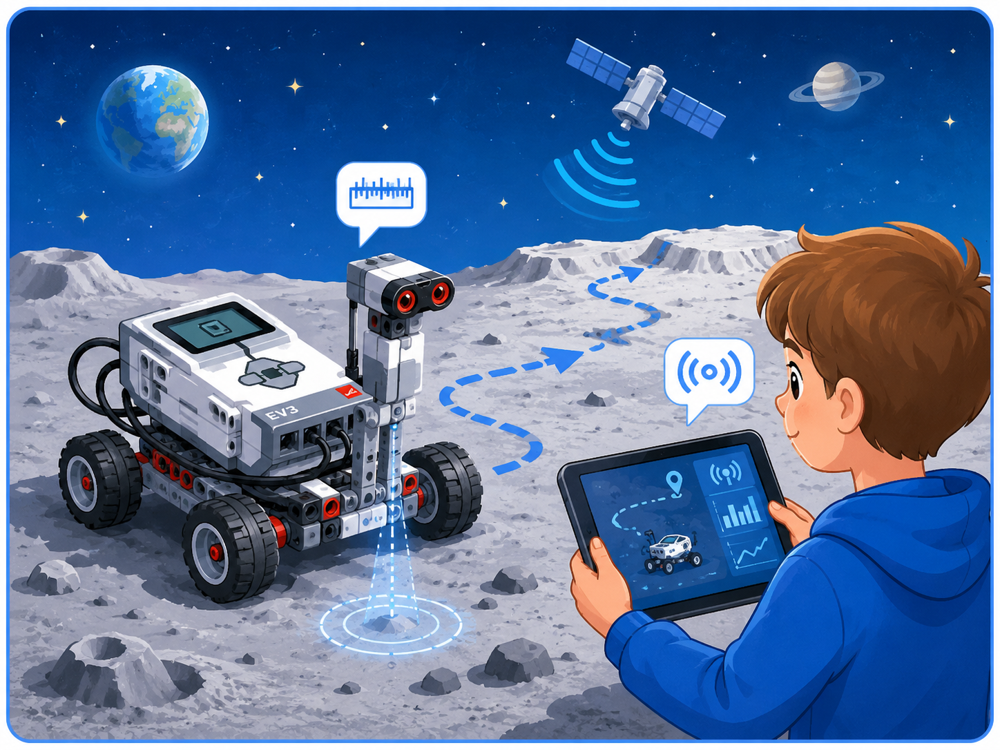
Космос и робототехника
Роботы помогают исследовать труднодоступные места, выполнять измерения и передавать информацию человеку.
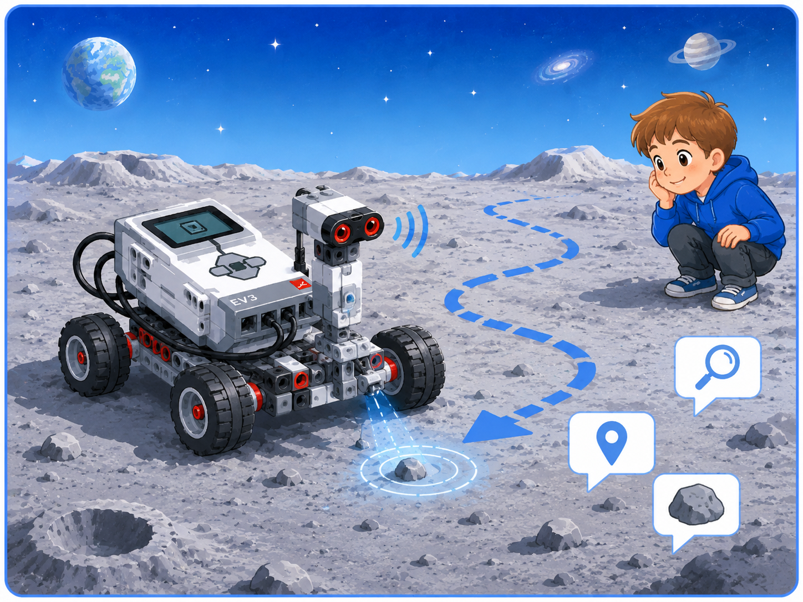
Космический ровер
Ровер — это подвижный робот, который может перемещаться по поверхности планеты или спутника и выполнять исследовательские задачи.
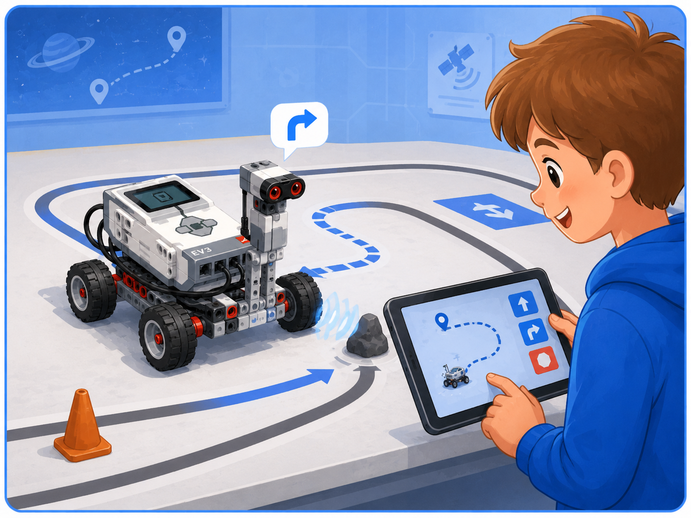
Модель на EV3
Робот EV3 может имитировать работу исследовательского ровера: ехать по маршруту, реагировать на препятствия и выполнять команды.
Что такое космическая миссия
Космическая миссия — это задание, которое выполняется для изучения космического объекта или решения технической задачи. В учебной робототехнике миссию можно представить как набор действий, которые должен выполнить робот.
Например, робот может проехать по «поверхности планеты», найти объект, остановиться перед препятствием, объехать зону опасности или доставить небольшой груз в заданную точку.
Что нужно выполнить
Перед запуском нужно определить, какую задачу решает робот: доехать до точки, найти объект, объехать препятствие или собрать данные.
Куда должен ехать робот
Маршрут показывает путь движения робота. Он может быть прямым, с поворотами, с препятствиями или с несколькими этапами.
На что реагировать
Робот может реагировать на расстояние до объекта, цвет поверхности, касание или изменение направления.
Какие задачи может выполнять робот EV3
При моделировании космической миссии робот EV3 может выполнять разные действия. Эти действия помогают обучающимся понять, как программа управляет поведением робота и как датчики помогают ему ориентироваться в окружающей среде.
Примеры задач космического робота
| Задача | Что делает робот | Какие блоки или датчики можно использовать |
|---|---|---|
| Движение по маршруту | Робот едет вперёд и выполняет повороты | Блоки движения, цикл, ожидание |
| Объезд препятствия | Робот обнаруживает объект и меняет направление | Ультразвуковой датчик, условие, моторы |
| Поиск зоны | Робот реагирует на цветную область поверхности | Датчик цвета, ожидание, переключатель |
| Сигнал о завершении | Робот сообщает, что миссия выполнена | Звук, экран, индикатор блока EV3 |
| Доставка груза | Робот перевозит небольшой объект в заданную точку | Моторы, захват, программа движения |
Поверхность планеты как модель среды
Для учебной миссии можно создать модель поверхности планеты. Это может быть поле из бумаги, картона или коврика, на котором отмечены зоны движения, препятствия, старт, финиш и исследовательские точки.
Такая модель помогает понять, что робот работает не сам по себе, а в определённой среде. Поверхность, препятствия, цветные метки и расстояние до объектов влияют на то, как должна быть составлена программа.
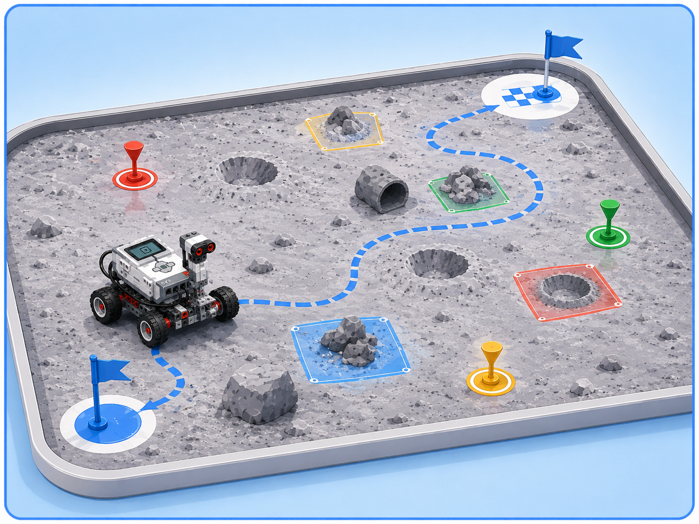
Поверхность планеты
На учебном поле можно разместить старт, финиш, препятствия, зоны исследования и цветные метки.
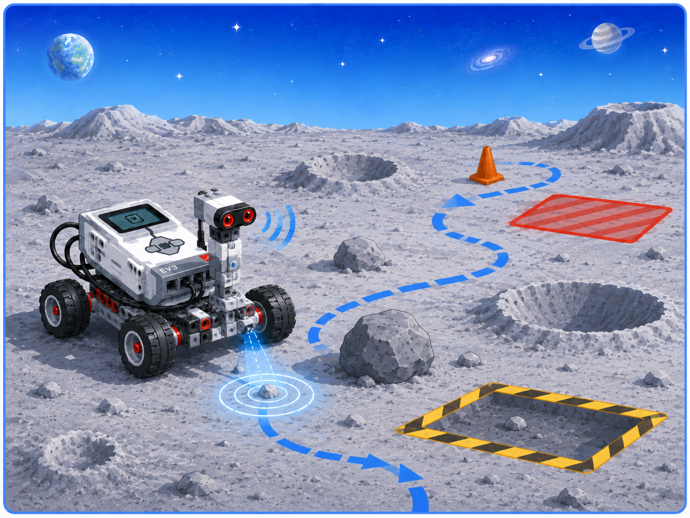
Препятствия
Препятствия имитируют камни, кратеры или опасные участки, которые робот должен обнаружить или объехать.
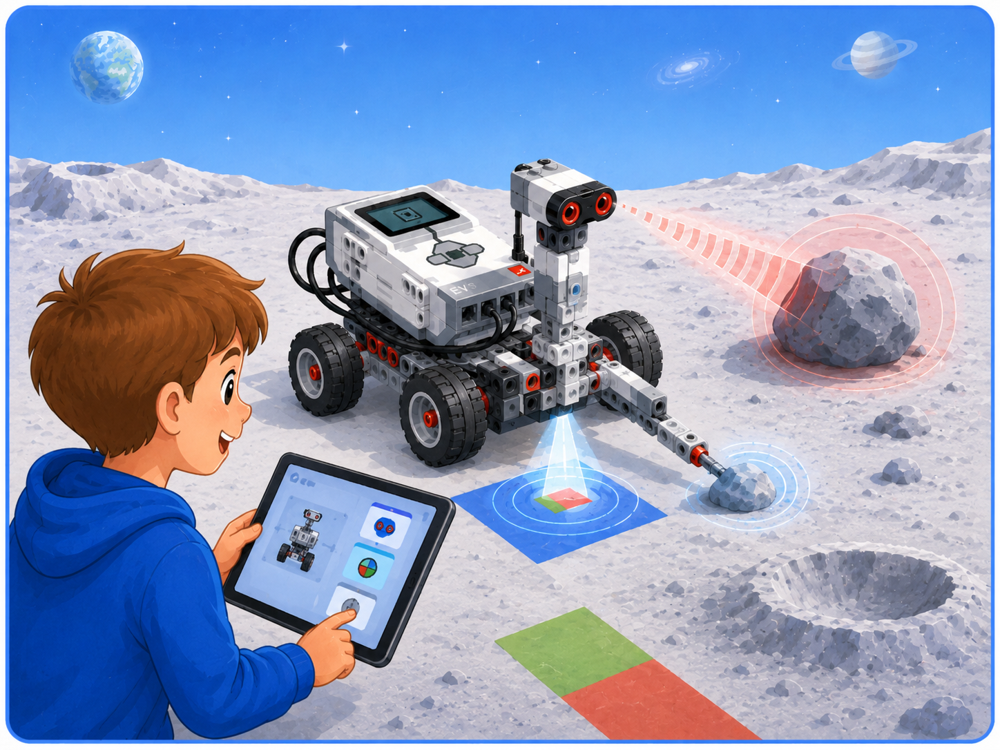
Датчики
Датчики помогают роботу получать информацию о среде: расстояние до объекта, цвет поверхности или касание.
Как составить алгоритм космической миссии
Перед программированием нужно описать алгоритм миссии. Это помогает понять, какие действия робот должен выполнить и в каком порядке.
Пример алгоритма миссии
Пример
Если робот должен исследовать «поверхность Марса», можно составить такой алгоритм: начать движение, доехать до первой точки, проверить расстояние до препятствия, при необходимости повернуть, доехать до финиша и подать сигнал.
Какие датчики могут пригодиться
В космической миссии особенно полезны датчики, которые помогают роботу ориентироваться на поле и реагировать на изменения условий.
Обнаружение препятствий
Помогает определить расстояние до объекта. Его можно использовать, чтобы робот остановился или повернул перед препятствием.
Поиск зоны
Позволяет определить цвет поверхности. Его удобно использовать для поиска отмеченной зоны или остановки на цветной метке.
Точный поворот
Помогает контролировать угол поворота робота, чтобы он точнее выполнял маршрут миссии.
Проверь себя: какая задача у робота?
Нажмите на ситуацию, чтобы увидеть пояснение.
Для такой задачи удобно использовать ультразвуковой датчик, который определяет расстояние до препятствия.
Для поиска цветной зоны можно использовать датчик цвета, который определяет цвет поверхности.
Для более точного поворота можно использовать гироскопический датчик или подобрать параметры поворота в программе.
Практический блок
Практическая часть занятия направлена на создание учебной космической миссии с использованием робота EV3. Обучающиеся проектируют поле, составляют алгоритм, программируют движение и проверяют выполнение задания.
Задание 1. Подготовка космического поля
Цель: создать учебную модель поверхности планеты.
- Подготовьте рабочее поле для движения робота.
- Обозначьте стартовую зону.
- Обозначьте финишную зону.
- Добавьте 1–2 препятствия, которые робот должен объехать.
- Добавьте цветную зону исследования.
- Проверьте, достаточно ли места для движения робота.
Подсказка: поле можно сделать на ватмане или на полу, используя цветную бумагу, кубики LEGO или небольшие предметы как препятствия.
Задание 2. Составление алгоритма миссии
Цель: описать действия робота до начала программирования.
- Определите цель миссии.
- Запишите, откуда робот начинает движение.
- Опишите маршрут робота.
- Определите, где робот должен остановиться или повернуть.
- Запишите, какие датчики могут понадобиться.
- Составьте алгоритм в виде последовательности шагов.
Подсказка: алгоритм можно записать так: старт → движение → проверка препятствия → поворот → движение → сигнал.
Задание 3. Программирование движения
Цель: создать простую программу движения робота по маршруту.
- Откройте среду программирования EV3.
- Создайте новую программу.
- Добавьте блок движения вперёд.
- Добавьте поворот.
- Настройте мощность моторов и длительность движения.
- Загрузите программу в блок EV3 и проверьте маршрут.
Подсказка: если робот не попадает в нужную зону, измените время движения, количество оборотов или параметры поворота.
Задание 4. Добавление реакции на препятствие
Цель: научить робота реагировать на объект перед собой.
- Подключите ультразвуковой датчик.
- Добавьте движение вперёд.
- Добавьте ожидание по расстоянию до препятствия.
- Настройте условие: расстояние меньше заданного значения.
- Добавьте остановку или поворот.
- Проверьте, реагирует ли робот на препятствие.
Подсказка: если робот не замечает препятствие, проверьте порт датчика и расстояние, указанное в программе.
Задание 5. Завершение миссии
Цель: добавить сигнал о выполнении задания.
- Определите, где заканчивается миссия.
- Добавьте остановку моторов.
- Добавьте вывод сообщения на экран EV3.
- Добавьте звуковой сигнал.
- Запустите программу полностью.
- Проверьте, выполняется ли миссия от старта до финиша.
Подсказка: можно вывести на экран сообщение «Mission complete» или подать короткий звуковой сигнал.
Космические миссии
В этом разделе представлены модели официального набора LEGO Education Space Challenge. Из них можно собрать учебное поле для моделирования исследовательской миссии на Марс.
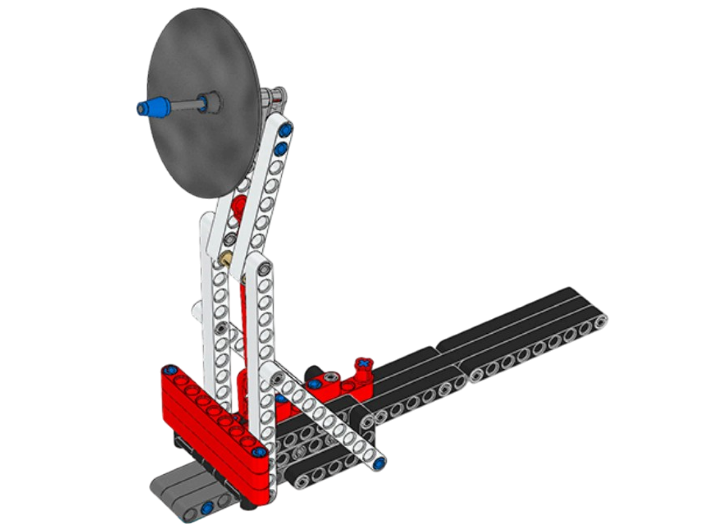
Станция связи
Оригинальное название: Communications Station.
Модель станции, которая обеспечивает связь участников космической миссии с центром управления.
Открыть инструкцию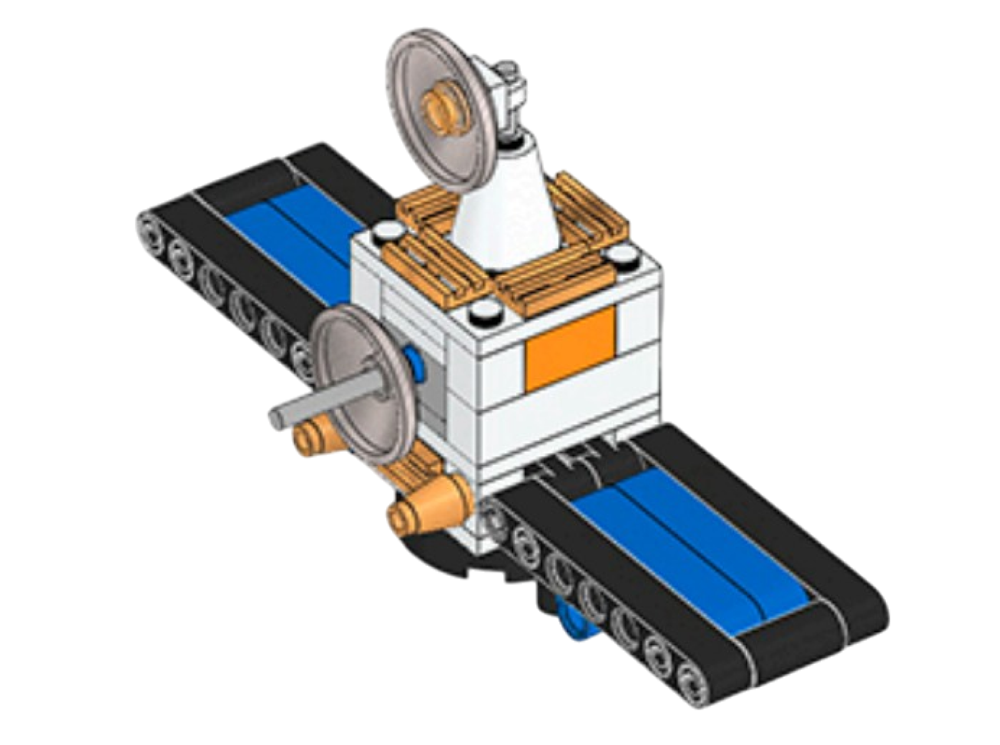
Спутник
Оригинальное название: Satellite.
Модель спутника, который может использоваться для наблюдения, передачи информации и исследования поверхности планеты.
Открыть инструкцию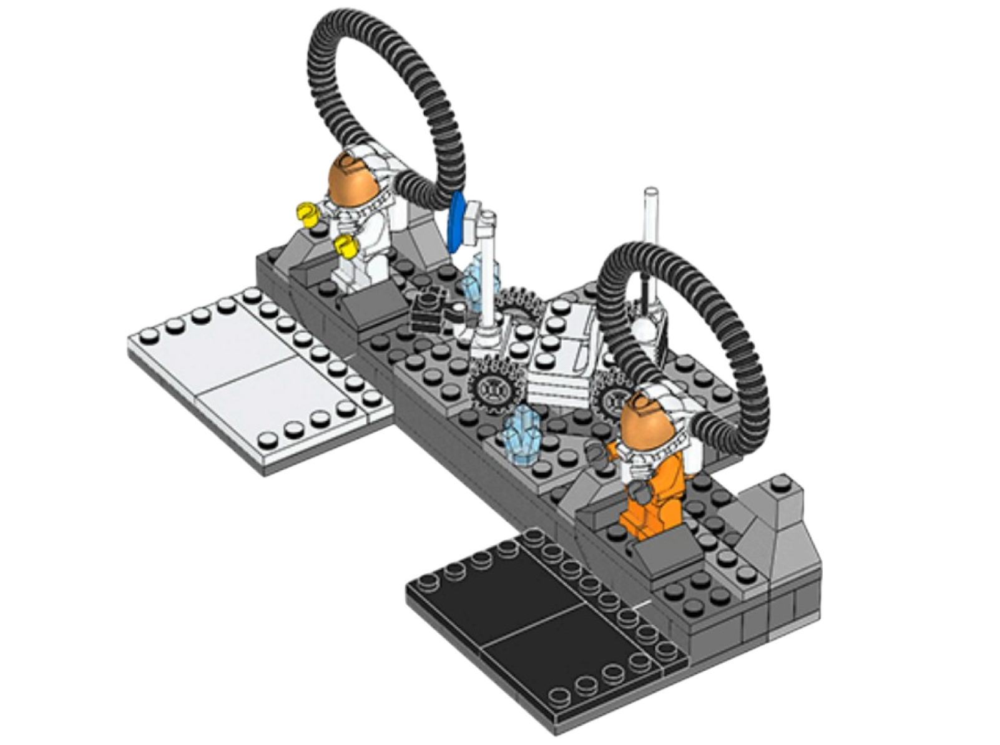
Космический экипаж
Оригинальное название: Flight Crew.
Модель экипажа космической миссии, который должен быть доставлен в безопасную зону.
Открыть инструкцию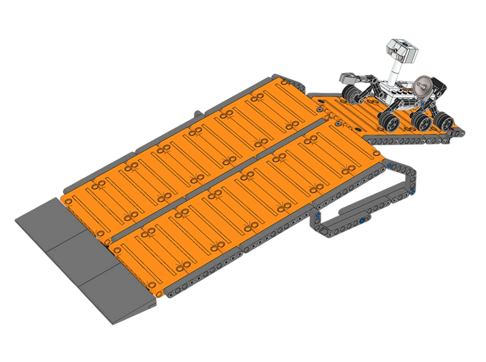
Кратер и марсоход
Оригинальное название: Crater and MSL.
Модель участка поверхности Марса с кратером и исследовательским марсоходом.
Открыть инструкцию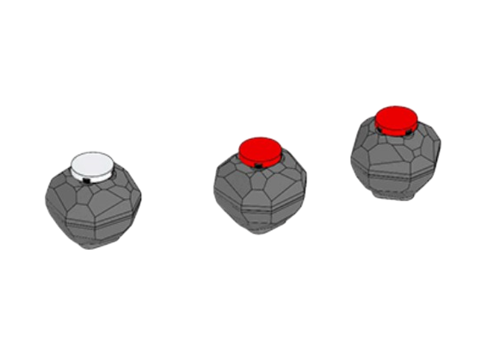
Образцы пород
Оригинальное название: Rock Samples.
Модель образцов марсианской породы, которые робот должен обнаружить, собрать или переместить.
Открыть инструкцию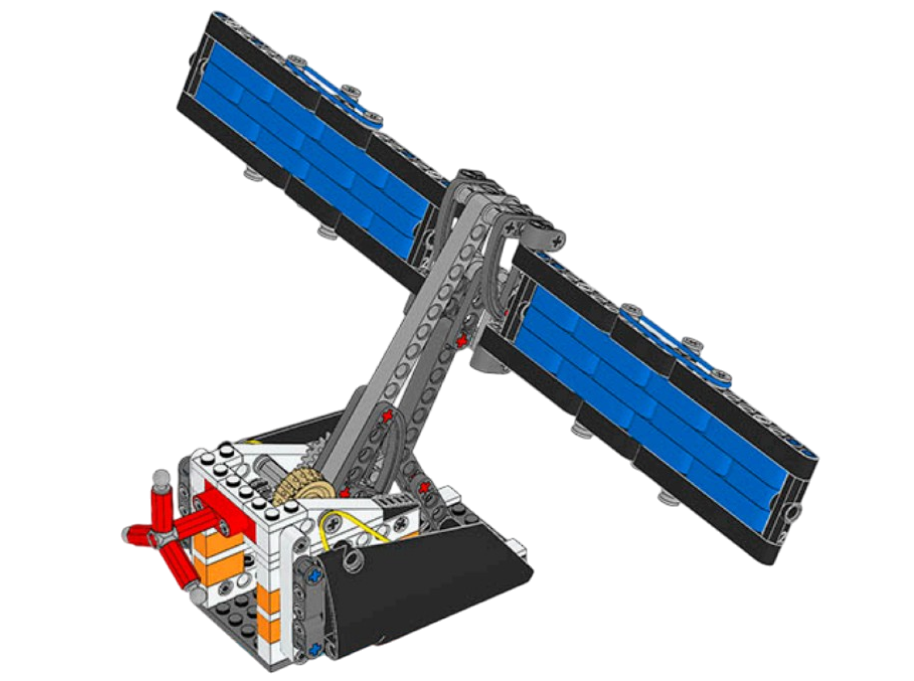
Солнечная панель
Оригинальное название: Solar Panel.
Модель источника энергии для космической базы. Её можно использовать в задании на разворачивание или настройку панели.
Открыть инструкцию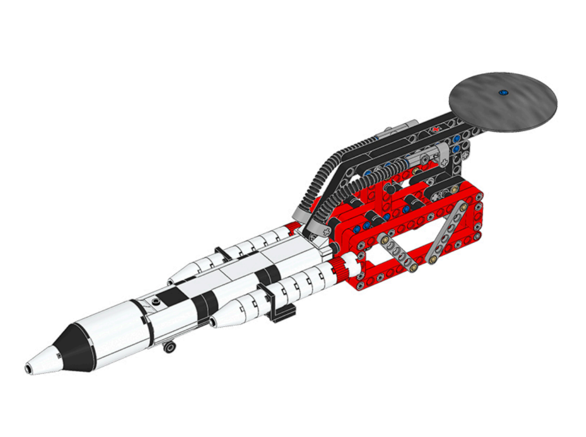
Ракета и пусковая установка
Оригинальное название: Rocket and Launcher.
Модель ракеты и механизма запуска. Она используется в заключительной части космического испытания.
Открыть инструкцию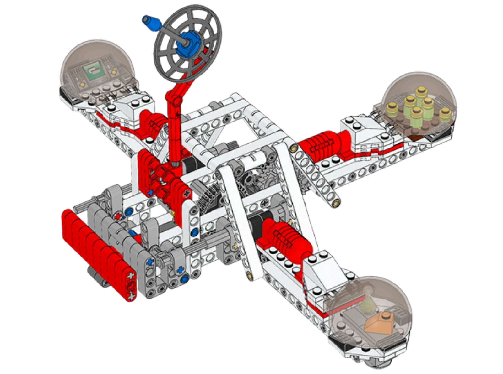
Марсианская база
Оригинальное название: Mars Outpost.
Модель исследовательской базы на Марсе, к которой должны быть доставлены экипаж, оборудование или исследовательские материалы.
Открыть инструкциюКак использовать инструкции на занятии
Обучающихся можно разделить на команды. Каждая команда собирает одну или несколько моделей, объясняет их назначение в миссии на Марс, а затем размещает модели на общем игровом поле.
Вопросы для самопроверки
1. Почему роботы используются при изучении космоса?
Роботы могут выполнять задачи в условиях, где человеку находиться сложно или опасно, например на поверхности других планет.
2. Что такое космическая миссия?
Космическая миссия — это задание, которое выполняется для изучения космического объекта или решения технической задачи.
3. Как EV3 можно использовать для изучения космоса?
EV3 можно использовать как модель космического робота или ровера, который выполняет движение, объезд препятствий и исследовательские задания.
4. Какой датчик помогает обнаружить препятствие?
Для обнаружения препятствия можно использовать ультразвуковой датчик, который измеряет расстояние до объекта.
5. Для чего нужен датчик цвета в космической миссии?
Датчик цвета можно использовать для поиска цветной зоны, остановки на метке или определения участка поверхности.
6. Что нужно сделать перед программированием миссии?
Перед программированием нужно определить цель миссии, подготовить поле, описать маршрут и составить алгоритм действий робота.
7. Зачем тестировать программу робота?
Тестирование помогает проверить, правильно ли робот выполняет маршрут, реагирует на препятствия и завершает миссию.
8. Что может быть препятствием на учебном космическом поле?
Препятствием может быть кубик LEGO, небольшой предмет, картонная преграда или обозначенная опасная зона.
9. Как робот может показать, что миссия завершена?
Робот может остановиться, вывести сообщение на экран, подать звуковой сигнал или изменить цвет индикатора.
10. Почему важно сначала составить алгоритм?
Алгоритм помогает заранее определить порядок действий робота и избежать ошибок при создании программы.